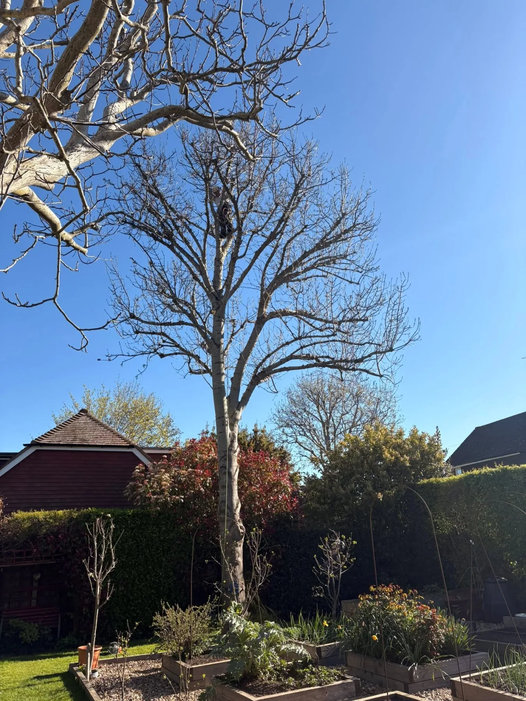
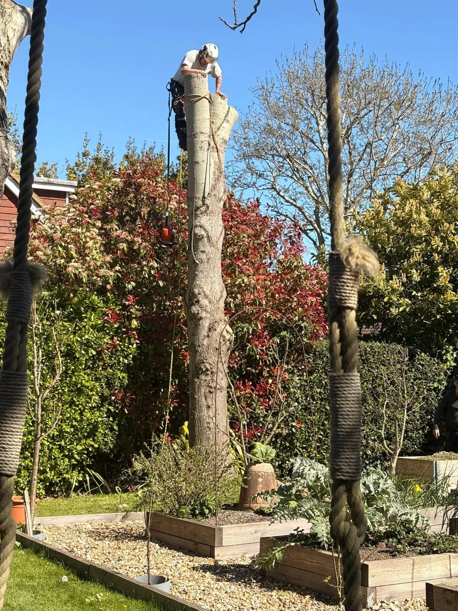
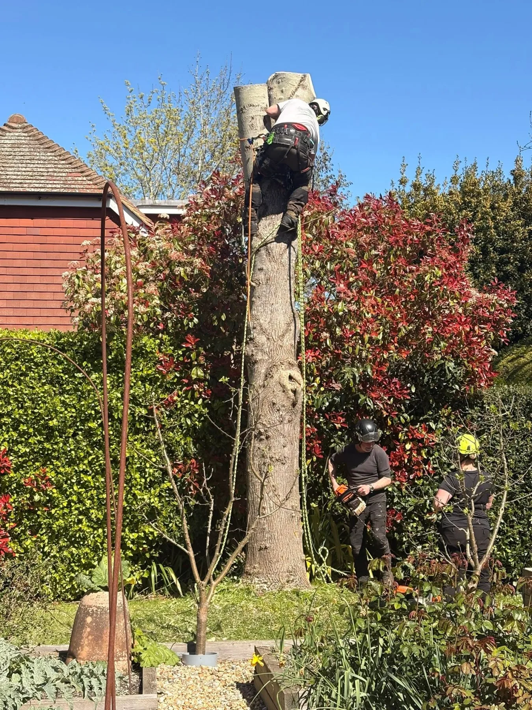
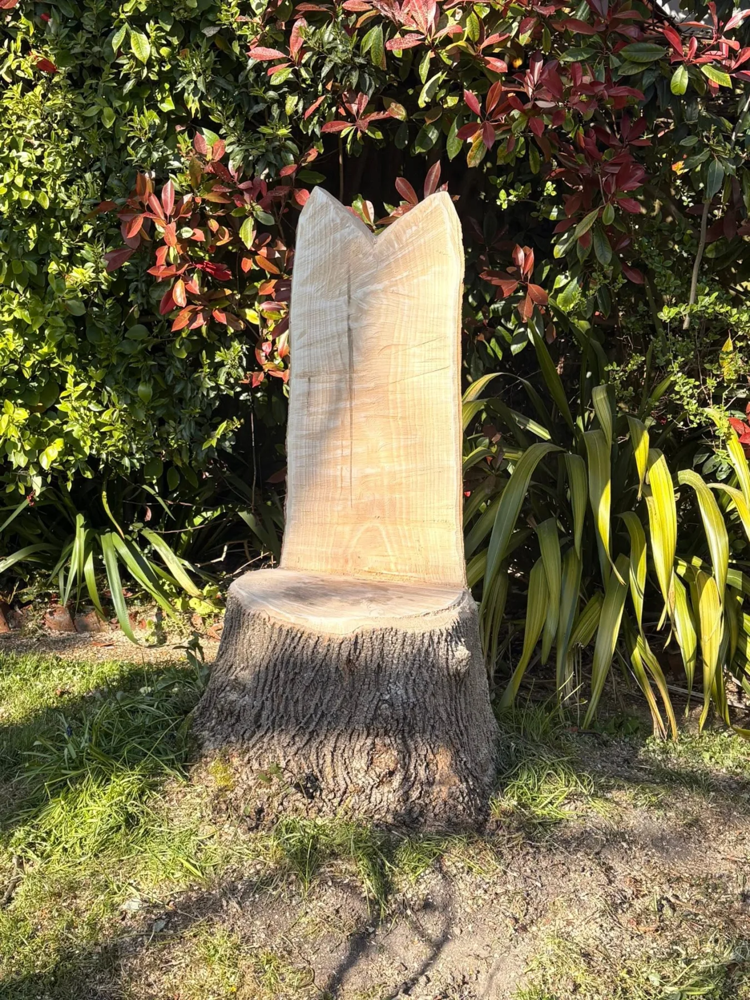

Tree removal • Lewes
Ash dieback in Lewes
A recent Treevolution project completed on 2026-04-23.

About the job
Work carried out by Treevolution.
So our big Ash tree had to come down, sadly Ash die back so would end up completely unstable
The end result a throne for, as Alastair said his ‘Queen B’
Thank you Henry Brown and gang from Treevolution for all your hard work looks fabulous


